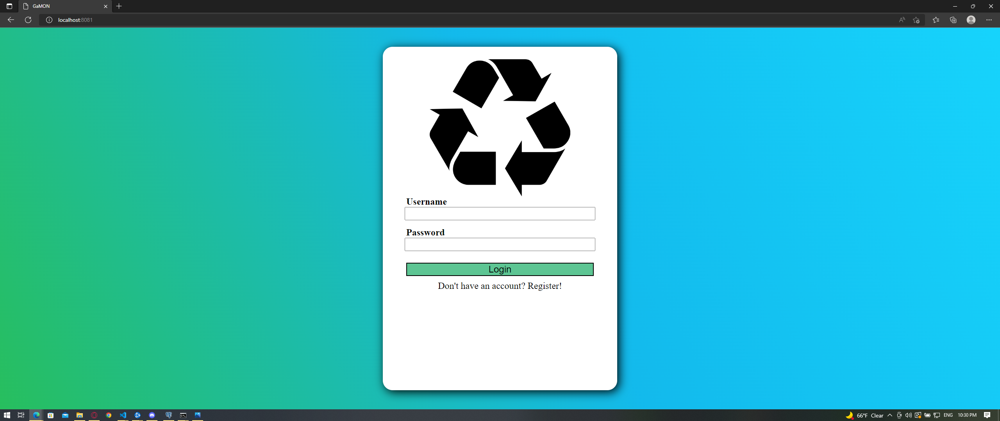
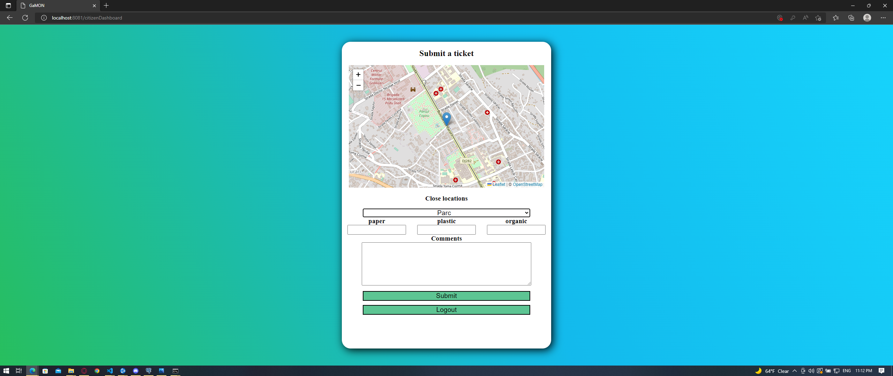
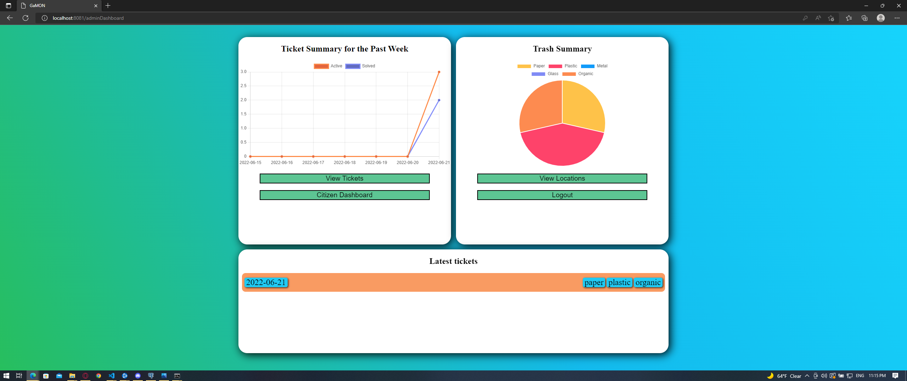
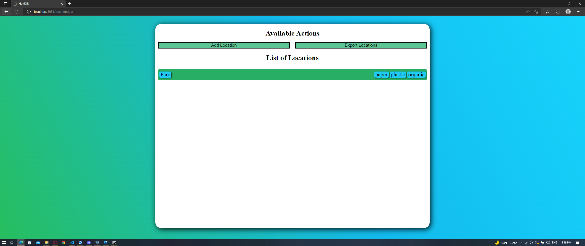
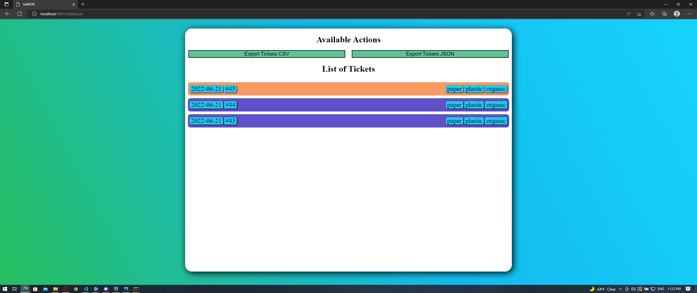
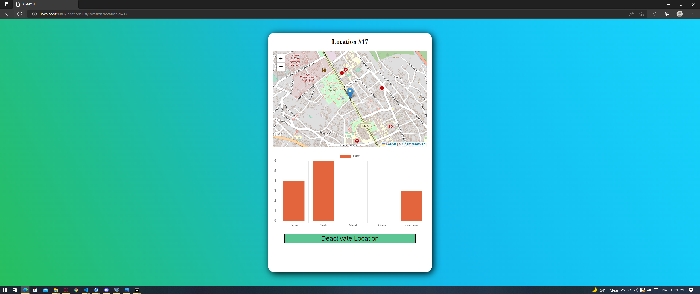
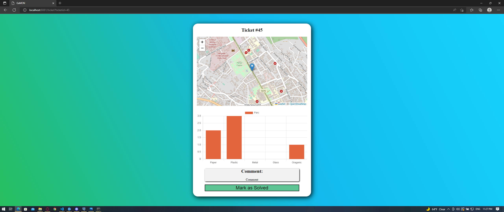
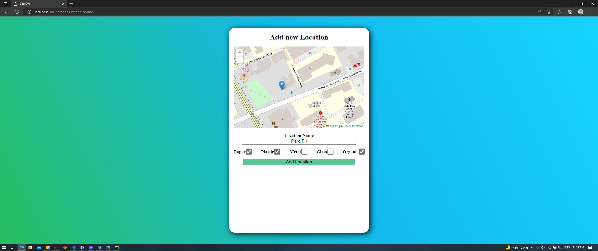

In this section we will discuss how the user interacts with the project GaMON.
This applications is meant to collect tickets from citizens and provide information to the administartors, related to those tickets
The user is meant to access the link of the application:
The application requires the user to login to an existing account or to create one on the spot.
After the login / register process, the user will be redirected to their respective dashboard.

The Citizen Dashboard has the following features:

The admin has access to a summary of different information the application collects, such as recent tickets, ticket status and trash status.

After clicking the View Locations button, the administrator is presented with the locations page.
Here the administrator can view all registered locations and add new ones by clicking Add New Location.
The administrator can also download in CSV format a report of all locations and the trash accumulated there by clicking Export Locations.

After clicking the View Tickets button, the administrator is presented with the tickets page.
Here the administartor can view all active tickets, solved and unresolved.
The administartor can also download in CSV or JSON format, reports of all active tickets.

By clicking any of the locations present on the Locations Page, the administrator will be presented with the Location Page.
Here the administartor can view the coordinates of the location on the map, and view statistics about the trash accumulated there.
The administrator can also activate and deactivate the location by pressing the button.

By clicking any of the tickets present on the Tickets Page, the administrator will be presented with the Ticket Page.
Here the administrator can view on the map, the location where the ticket was palced, quantities of trash reported at that location, and a comment.
The administrator can also mark the ticket as solver, or deactivate it to ignore its presence in reports.

By clicking the Add New Location button on the locations page, the administrator will be presented with the Add Location Page.
Here the administrator can add a new location, by selecting a place on the map, toggling the types of trash can be deposited there, and giving the location a name.
After that is done, the administrator can press Add Location.
